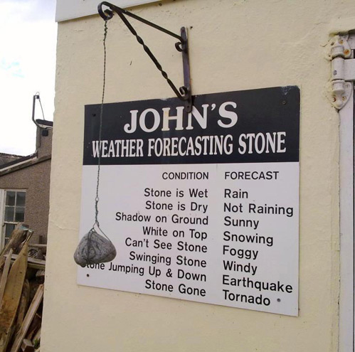
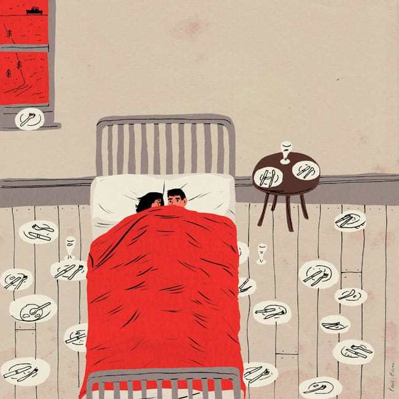
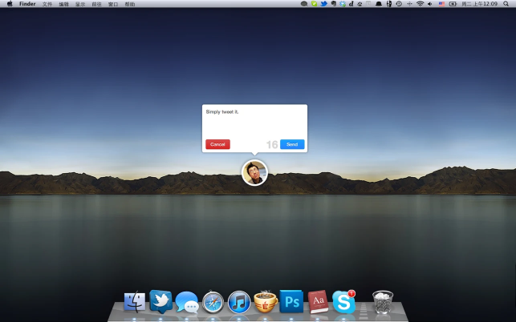

Rémy Gaillard - Austronaut
Мое самое любимое у него. Каждый раз ржу :)
Paul Blow

Очень тонко подмечено.
Rango (2011)
Отличный мульт!
Quick Tweet

Клевая мелкая прога, которая ничего не умеет, кроме как твиттить.
Keith Jarrett - The Köln Concert: Part I
О, блин, как классно.
Who do you play for?
Nike Stadium & Pigalle - Goutte d’Or
The Known Universe
Деталь

Первые воспоминания
Я помню совсем-совсем немного.
Помню как какой-то дядя (не отец) нес меня на плечах через кусты и небольшую речку в деревне. Помню, что было слегка странно от этого дяди, помню как шумела река и лес. Мне было пару лет, наверное.
Помню, как чуть постарше (3 или около того?) скатился с винтовой лестницы со стаканом (чашкой?) сахара в руке. Помню, что сахар рассыпался по всей лестнице и как было обидно.
Помню набережную в Ялте (года 4-5)
Помню ощущение от города после лета, когда кажется, что все совсем другое.